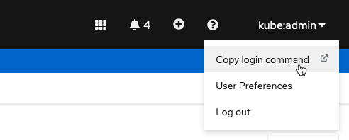

Objectives
In this Exercise you will learn how to install Maximo Monitor on an existing MAS cluster.
Before you begin:
This Exercise requires that you have completed the pre-requisites required for all exercises
Start MAS CLI
Note
This lab relies on the MAS Devops Ansible Collection and the IBM Maximo Application Suite CLI Utility.
First open a terminal and run the docker command to start the MAS CLI docker container:
docker run -ti --rm --pull always quay.io/ibmmas/cli
Login to the OpenShift cluster using your kubeadmin account and click on Copy login command:

Click on Display Token and copy the oc login command in its entirety:

Run the command in the MAS CLI docker container:

Prepare for Installation
Define the required environment variables according to MAS DevOps Ansible Playbook for adding IoT using the MAS CLI docker container.
First extract the existing MAS License File from your MAS environement and define MAS_CONFIG_DIR:
mkdir /root/mas_configs
kubectl get secret ibm-sls-sls-entitlement -n ibm-sls -o json | jq -r '.data.entitlement' | base64 --decode > /root/mas_configs/entitlement.lic
export MAS_CONFIG_DIR=/root/mas_configs

Then define the other environment variables:
export IBM_ENTITLEMENT_KEY=$(kubectl get secret ibm-entitlement -n mas-inst1-core -o json | jq -r '.data[".dockerconfigjson"]' | base64 --decode | jq -r '.auths["cp.icr.io/cp"].password')
export DB2_INSTANCE_NAME=db2u-iot
export MAS_INSTANCE_ID=inst1
Install IoT Tool
The first component that needs to be installed is the IoT Tool - this also includes: * Set up Db2 instance as the system-level JDBC datasource * Set up Kafka cluster as the system-level Kafka
Run the following command in the MAS CLI docker container:
ansible-playbook ibm.mas_devops.oneclick_add_iot
Now grab a cup of coffee and be patient. Installing the IoT Tool and the dependencies takes 1,5 - 2 hours.
Don't be worried when you see the FAILED - RETRYING:... messages:
You can continue this exercise, when you see the following:
Install Monitor
Run the following command in the MAS CLI docker container:
ansible-playbook ibm.mas_devops.oneclick_add_monitor
Another cup of coffee and patience is needed. Installing the Monitor application takes 1 - 1,5 hours. You are done when you see this:
Logging into MAS and viewing in About, this MAS environment now have MAS Core, Manage, IoT, and Monitor installed:

Tip
You can now install the additional Maximo Application Suite applications by following the MAS Devops Ansible Collection or begin to test, build your demo, or build your pilot with the installed applications - have fun !!
Congratulations you have successfully installed Maximo Monitor on an existing MAS environment.